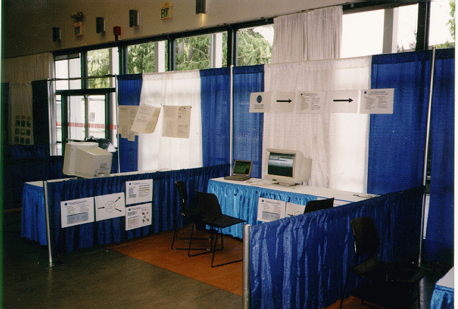

The posters of the booth, giving a short introduction of the demonstration. The flyers for FlowBack and FlowMake from our booth, giving an overview of our prototypes. A walk through of the FlowBack demonstration as you will have seen in Seattle. A presentation on the FlowBack benefits, also including other DSTC workflow tools. The technical report of the paper, with full references.
For more information regarding DSTC FlowBack, please contact:
The FlowBack Product Manager
DSTC Pty Ltd
University of Queensland
Qld 4072 Australia
Ph: +61 7 3365 4310
Fax: +61 7 3365 4311
Email: workflow@dstc.com